旅の記録
写真アプリの中には、七百枚もの写真が一度の旅に詰まっていることがある。そのままにしておくと、旅はただの枚数になってしまう。だからときどき引き出しを開けて、何枚かを選び、短い文章を添えておくことにした。新しい旅から順に並べている。今のところ、家族三人や妻と二人で出かけた旅を中心にまとめている。
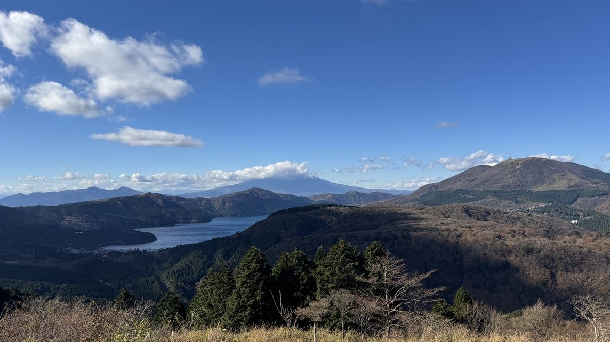
2026年11月21日〜23日東海道を西へ、三つの城
箱根・熱海・浜松・犬山・名古屋・岡崎
勤労感謝の日の連休、妻と二人で東海道を西へ。箱根の富士山、浜松の墓参り、犬山城、熱田神宮、名古屋城、岡崎城。
旅行記を読む →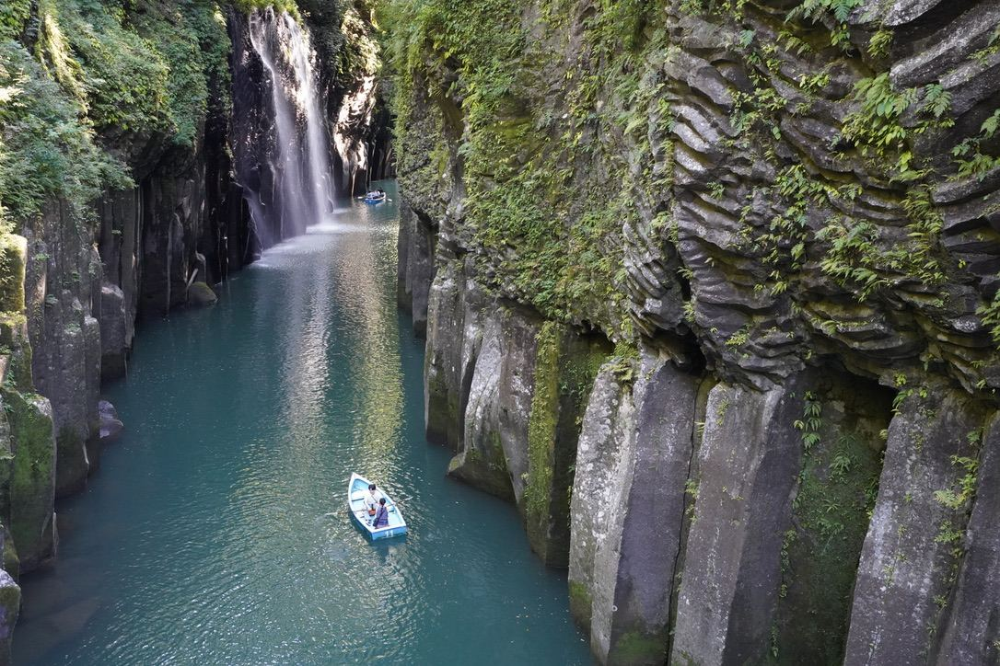
2026年9月19日〜23日南九州をひとまわり
鹿児島・熊本・天草・高千穂・指宿
鹿児島で息子と落ち合い、三人で九州の南半分をぐるりと一周した。イルカの背びれ、海辺の教会、峡谷の滝、そして山のような白くま。家族の旅は、少し欲張りなくらいでちょうどいい。
旅行記を読む → 2026年8月21日〜24日
2026年8月21日〜24日ロケットの島で
鹿児島・種子島
ANAとトッピーを乗り継いで、仙巌園の桜島、種子島の夕日と発射台の見える丘、夏の花火。息子に会いに行った島の旅。
旅行記を読む → 2026年8月1日〜4日
2026年8月1日〜4日信州、夏の四日間
北杜・松本・美ヶ原・諏訪・上高地
妻と二人で、ひまわり畑から雲の上の牧場、梓川の碧まで。写真を見返すと、どの景色の中にも帽子をかぶった妻がいた。景色を撮るつもりで、僕はたぶん彼女を撮っていた。
旅行記を読む → 2026年5月3日〜5日
2026年5月3日〜5日松島、秋保、那須
松島・秋保大滝・那須岳
新緑のゴールデンウィーク。松島の海とお寺の杉、秋保の大滝、那須岳の頂上。三人でめぐった東北。
旅行記を読む →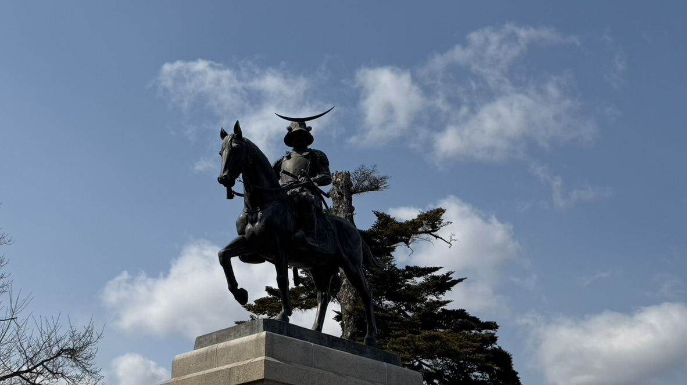
2026年3月20日〜22日三月の仙台、杜の都
仙台・作並・笠間
春分の日の連休、仙台で息子と落ち合った。青空の下の政宗公の像、作並、そして帰り道の笠間の蕎麦。
旅行記を読む →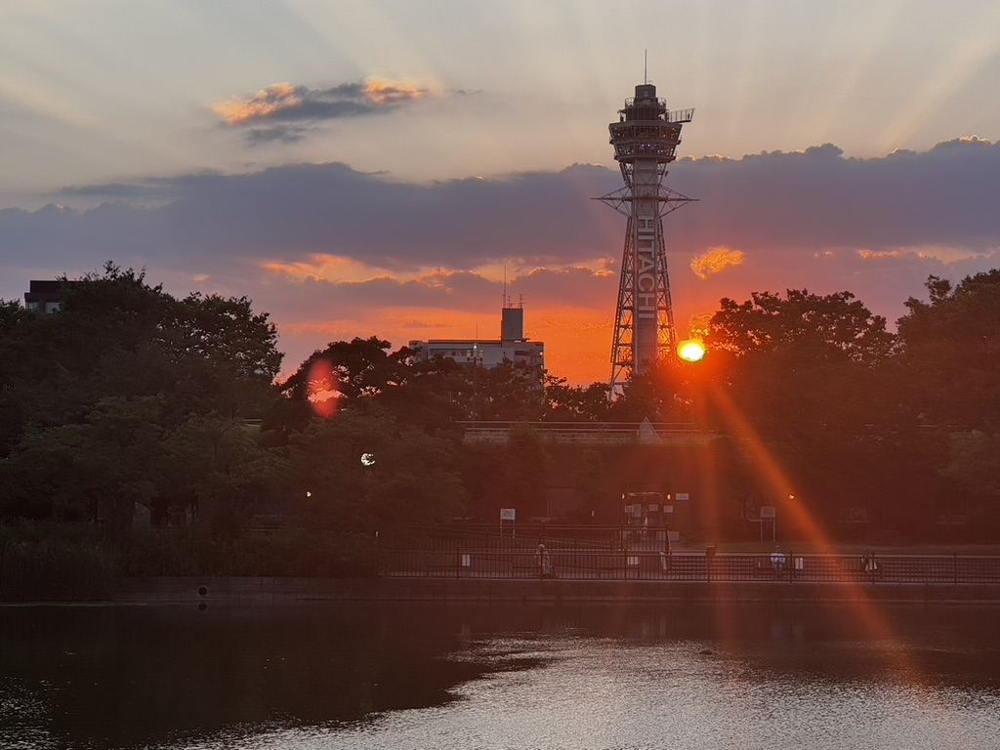
2025年7月29日〜30日通天閣の夕焼け
大阪・京都・横浜
妻と二人で見た通天閣の夕焼け、京都の朝ごはん。そして横浜に戻った夜、息子と三人で食べた蕎麦。
旅行記を読む →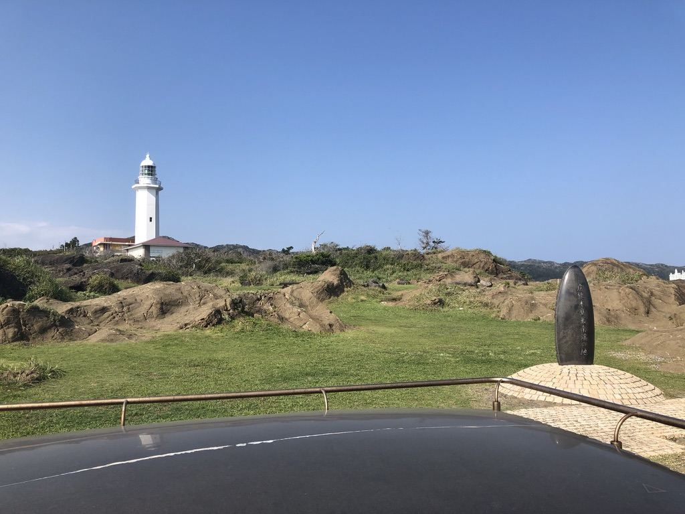
2021年8月29日海ほたるから、房総の最南端へ
海ほたる・野島埼
東京湾の真ん中の海ほたるから、白い灯台の立つ房総の最南端・野島埼へ。夏の終わりの日帰りドライブ。
旅行記を読む →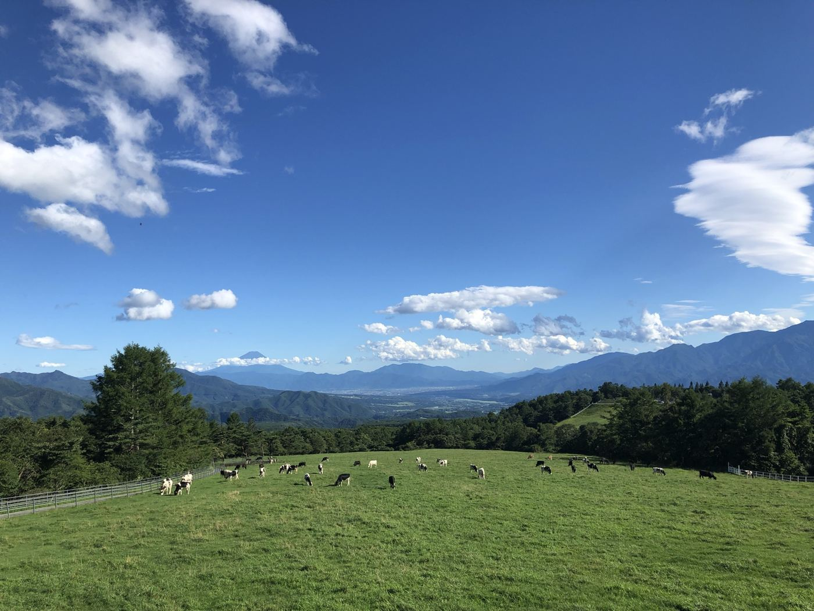
2021年8月10日〜13日八ヶ岳を越えて、昇仙峡へ
清里・小海・北八ヶ岳・昇仙峡
清里の牧場、北八ヶ岳の岩の上、霧の高原、昇仙峡の石門。八ヶ岳を越えて甲府まで走った夏。
旅行記を読む → 2020年12月26日〜28日
2020年12月26日〜28日浅間山の見えるゲレンデ
軽井沢
光の映る池、ゲレンデの蕎麦、白い煙をあげる浅間山。年の瀬の軽井沢で、家族でスキー。
旅行記を読む →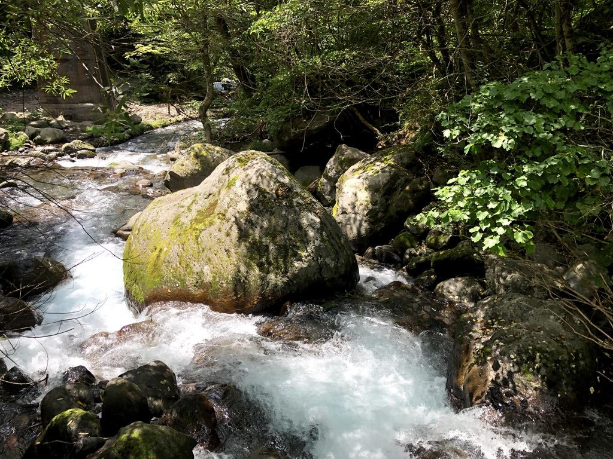
2020年8月10日〜12日高原の夏、滝と線路と湖
清里・八ヶ岳・小海・軽井沢
遠くへ出かけにくかった夏。吐竜の滝、小海線の小さな駅、雲場池。車で高原をめぐった三日間。
旅行記を読む →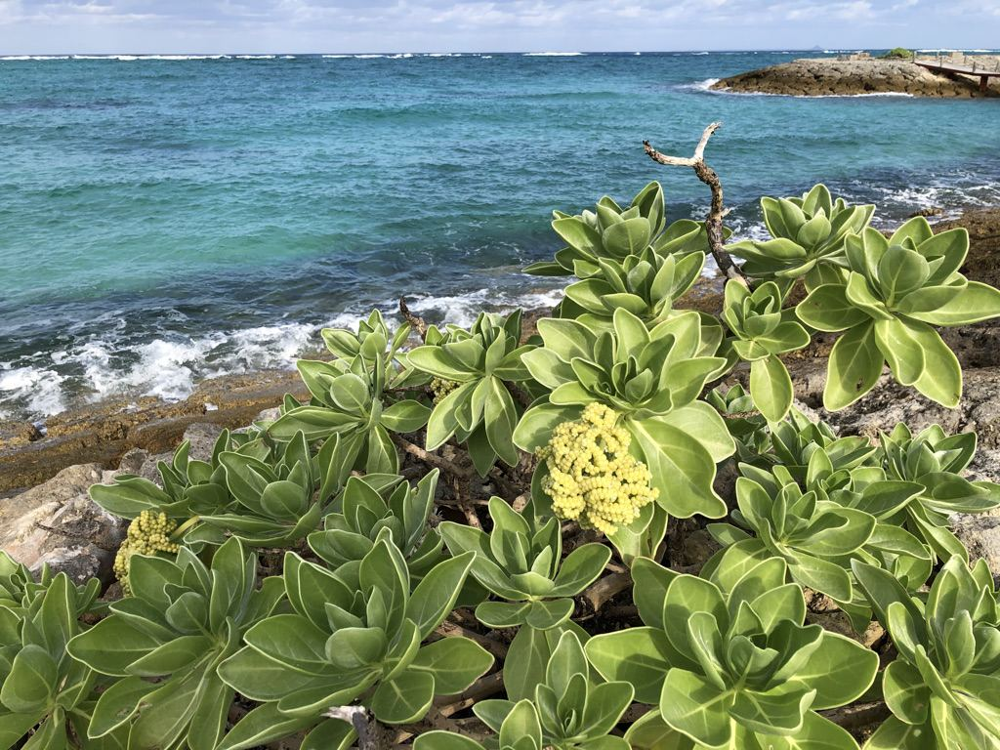
2019年12月27日〜31日冬の沖縄、ふたたび
恩納・残波岬・本部
ヤシの木のゴルフ場、桟橋の朝、残波岬の白い灯台、二年ぶりの美ら海水族館。二度目の冬の沖縄。
旅行記を読む → 2018年8月5日〜10日
2018年8月5日〜10日石の顔と、茶色い川
カンボジア・シェムリアップ／ベトナム・ホーチミン
家族三人で、アンコールの遺跡とメコンの中洲へ。八百年微笑みつづける石の顔と、ミルクティー色の川。変わっていくのは、たぶん僕らのほうなのだろう。
旅行記を読む → 2018年4月29日〜5月6日
2018年4月29日〜5月6日遠くへ行かないゴールデンウィーク
横浜・三浦・房総・金沢文庫
遠くへは行かず、三浦の岩場、庭でのバーベキュー、房総のコース、称名寺の反り橋。近場をめぐった長い休み。
旅行記を読む →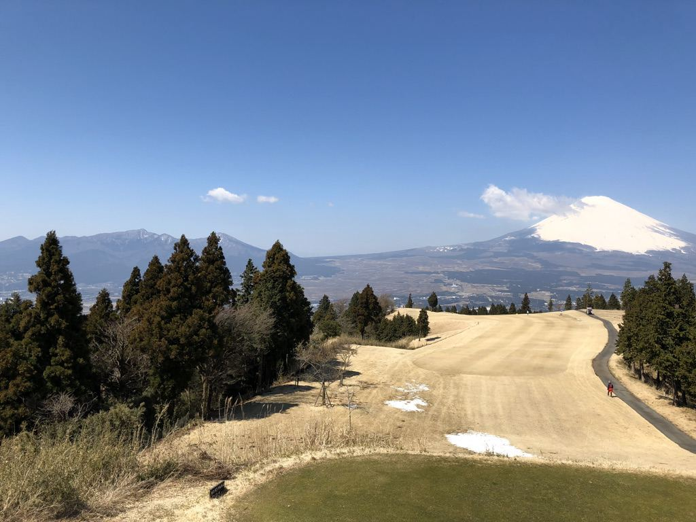
2018年3月25日富士山の見えるコース
御殿場
東京で桜が咲きはじめた週末、雪をかぶった富士山を背に、家族三人でまわった御殿場のコース。
旅行記を読む → 2017年12月29日〜2018年1月3日
2017年12月29日〜2018年1月3日沖縄で年を越す
本部・恩納・名護・那覇
ジンベエザメ、琉球村の赤い花、大晦日のエメラルドの海、元日の首里城。沖縄で迎えた年越し。
旅行記を読む → 2017年8月
2017年8月イタリア、夏の一週間
ミラノ・ヴェネツィア・フィレンツェ・ピサ・ローマ・ティヴォリ
妻と二人で、ミラノからヴェネツィア、フィレンツェ、ピサ、ローマへ。見上げてばかりいた夏の一週間。
旅行記を読む →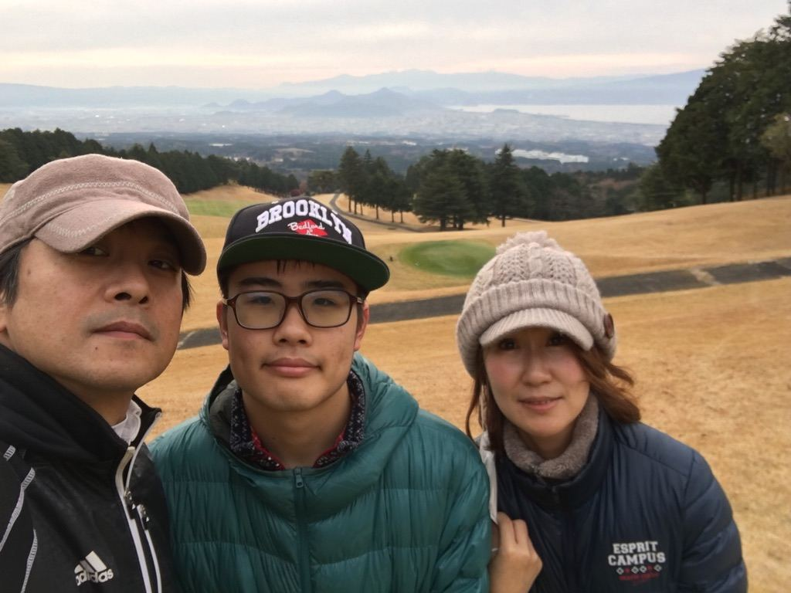
2017年12月24日クリスマスイブの初冬のコース
沼津
クリスマスイブの朝、ニット帽をかぶった三人で冬のコースへ。年末の沖縄旅行の、ちょうど前の日曜日。
旅行記を読む → 2016年8月16日
2016年8月16日お盆のゴルフと、駿河湾
沼津
北海道旅行から二週間後の真夏。駿河湾を見下ろす沼津の高台のコースを、家族三人でまわった。
旅行記を読む →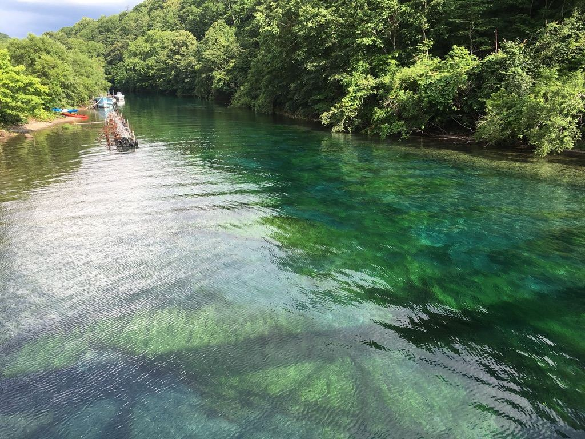
2016年7月30日〜8月2日北海道、夏の四日間
小樽・赤井川・札幌・支笏湖
小樽運河の夕暮れ、赤井川の森、札幌のジンギスカン、そして支笏湖のカヌー。涼しい北海道の夏休み。
旅行記を読む →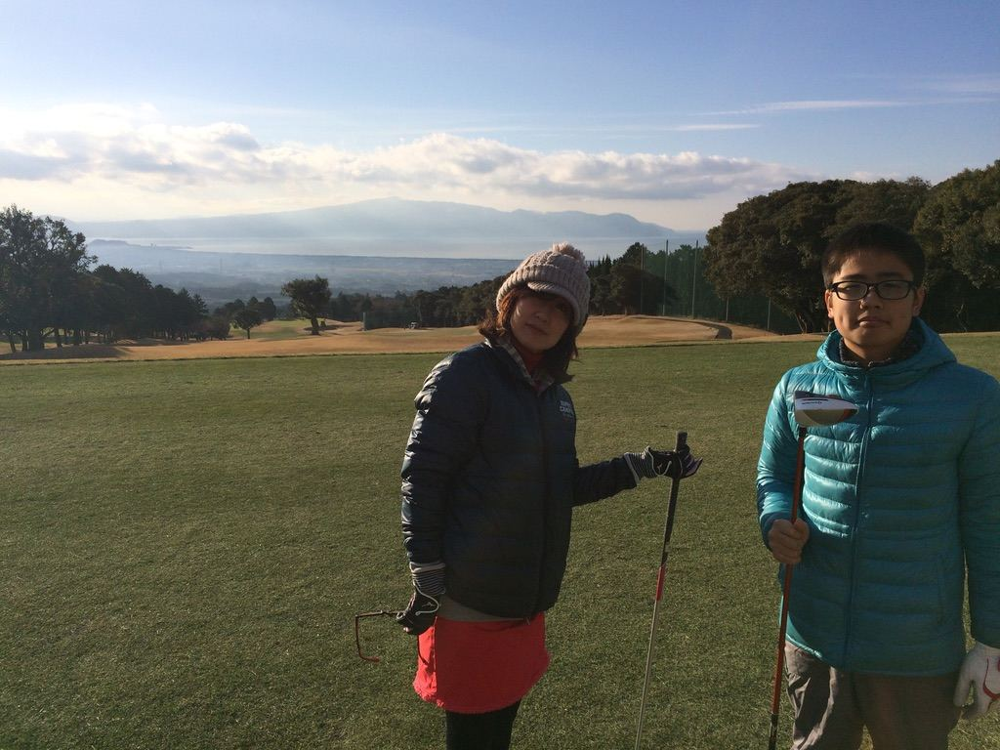
2015年12月31日〜2016年1月2日大晦日と正月のゴルフ
伊豆・沼津
大晦日と正月を、家族三人でゴルフ場で過ごした。斜めの光と、冬のフェアウェイ。
旅行記を読む →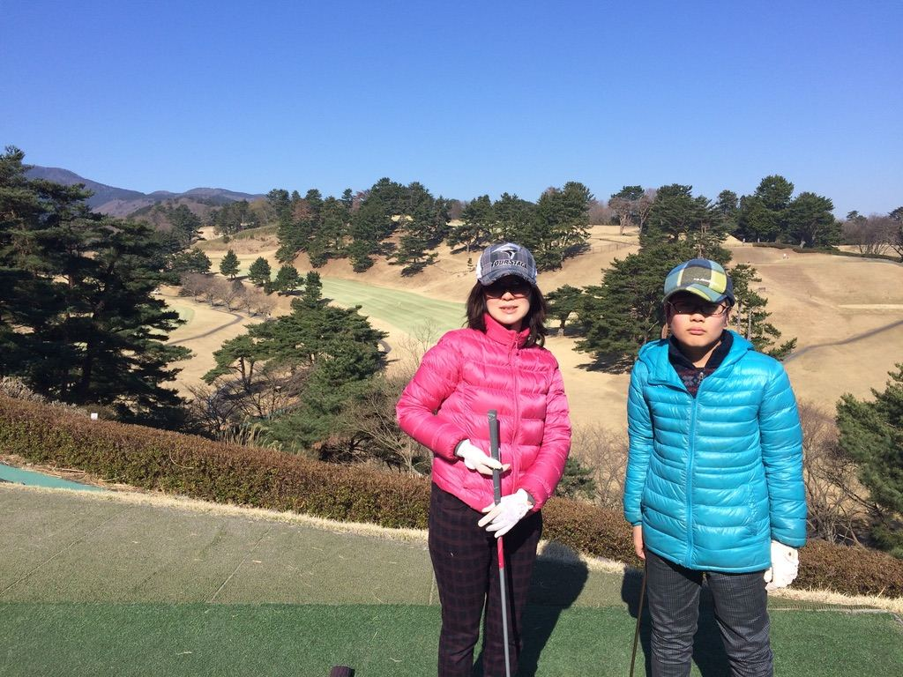
2015年3月25日〜27日春休みのゴルフ
伊豆
春休みに、妻と息子と三人で、冬枯れの高原のコースをまわった。
旅行記を読む →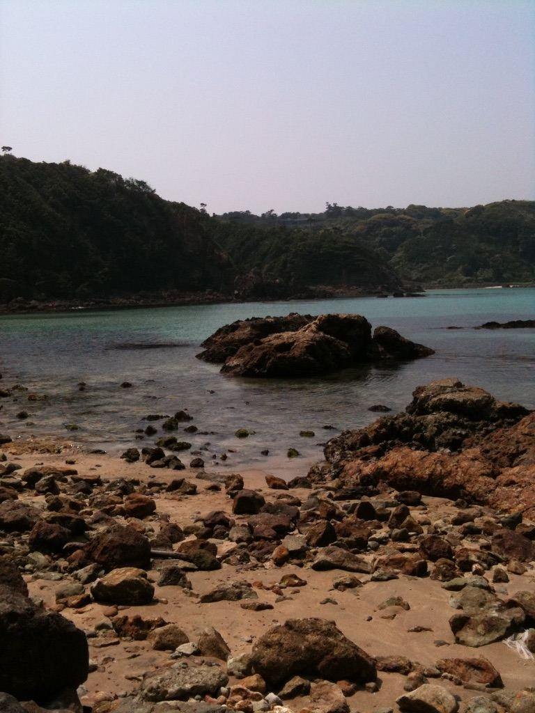
2010年5月4日〜5日伊豆の入り江で、櫂をこぐ
伊豆
息子がまだ小学生だった春。家族で大きな手こぎ舟に乗り、堤防で釣り糸を垂らした伊豆の二日間。
旅行記を読む →